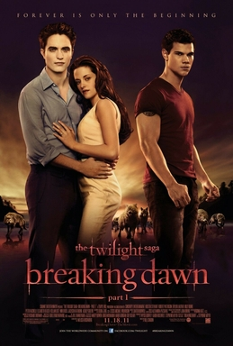

Part one: The Quileutes close in on expecting parents Edward and Bella, whose unborn child poses a threat to the Wolf Pack and the towns people of Forks. Part two: After the birth of Renesmee/Nessie, the Cullens gather other vampire clans in order to protect the child from a false allegation that puts the family in front of the Volturi.